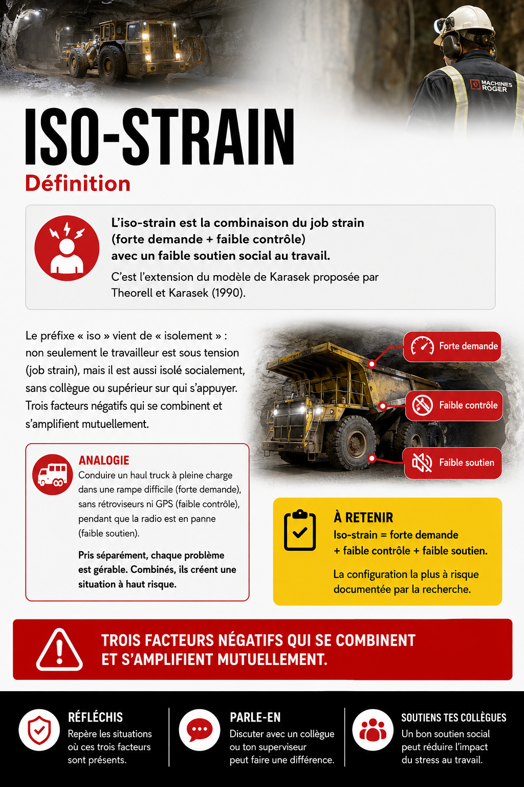
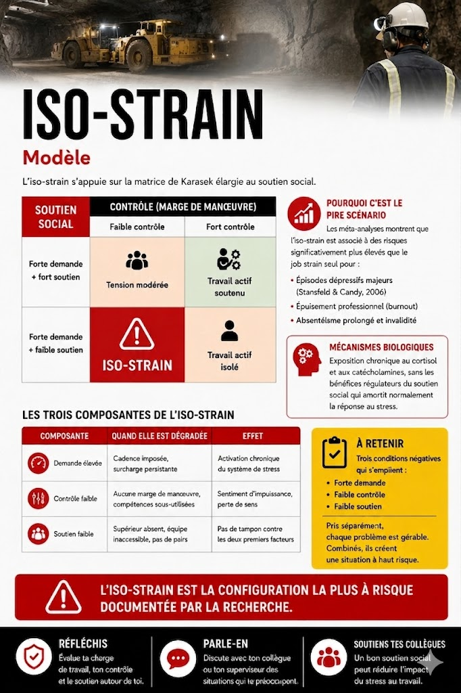
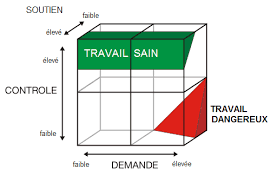
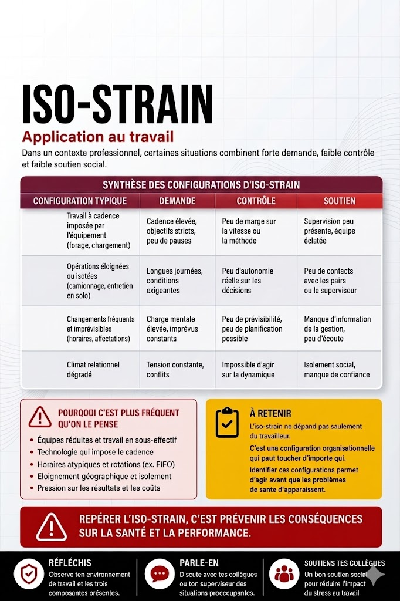
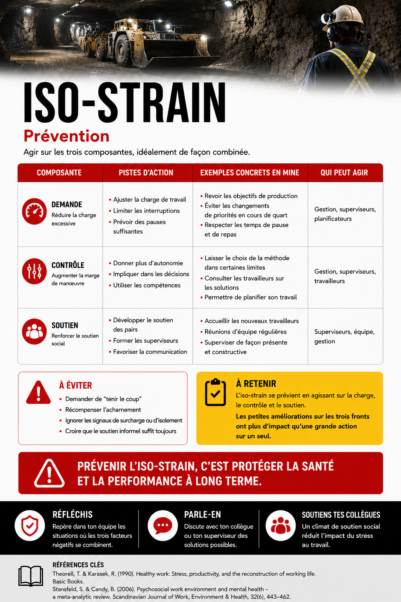
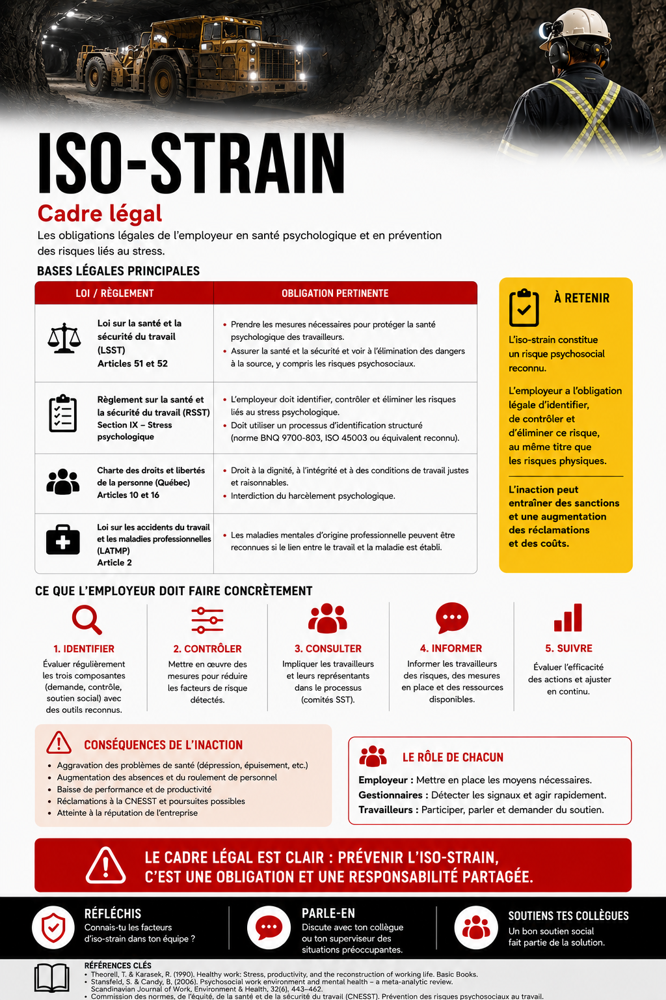

Iso-strain
- Maladies cardiovasculaires (Belkic et al., 2004; Kivimäki et al., 2006)
- Trouble
{kind=link}

Toucher l'image pour l'agrandirDéfinition
Iso-strain : combinaison du job strain (forte demande + faible contrôle, Modèle de Karasek) avec un faible soutien social au travail. C'est l'extension du modèle de Karasek proposée par Theorell et Karasek (1990) pour intégrer la troisième dimension.
Modèle
{kind=link}

Toucher l'image pour l'agrandirL'iso-strain s'appuie sur la matrice de Karasek élargie au soutien social
{kind=link}

Toucher l'image pour l'agrandirPourquoi c'est le pire scénario : les méta-analyses montrent que l'iso-strain est associé à des risques significativement plus élevés que le job strain seul pour
- dépressifs majeurs (Stansfeld & Candy, 2006), voir PHQ-9
- Épuisement professionnel (burnout)
- Absentéisme prolongé et invalidité
Mécanismes biologiques : exposition chronique au cortisol et aux catécholamines, sans les bénéfices régulateurs du soutien social qui amortit normalement la réponse au stress.
Mesure
L'iso-strain n'a pas de questionnaire dédié : il est dérivé du JCQ de Karasek.
Méthode de calcul
- Administrer le Questionnaire de Karasek (JCQ)
- Identifier les travailleurs en job strain (Demande > médiane et Contrôle < médiane)
- Parmi eux, identifier ceux avec Soutien social < médiane
- Cette intersection = travailleurs en iso-strain
Précautions : la médiane utilisée doit être celle d'une population de référence comparable (ex. cohorte SUMER, EQCOTESST pour le Québec). L'utilisation de médianes internes à un petit groupe sous-estime systématiquement la prévalence.
Un travailleur classé en iso-strain ne va pas nécessairement développer une maladie. Le risque est statistique. Cependant, à l'échelle d'une équipe ou d'un département, la prévalence d'iso-strain est un signal organisationnel fort.
Application en mines
{kind=link}

Toucher l'image pour l'agrandirAmplificateurs propres au minier
- Camp éloigné : pendant la rotation, le soutien externe (famille, amis, communauté) est inaccessible. Si le soutien interne (collègues, contremaître) est aussi faible, le travailleur est doublement isolé.
- Quarts longs : la fatigue cumulative dégrade la perception de contrôle (« je n'ai plus l'énergie de discuter une procédure »).
- Hiérarchie de chantier : la culture du « tough guy » décourage le signalement, ce qui réduit le soutien perçu.
Signaux observables
| Phase | Signaux | Action recommandée |
|---|---|---|
| Précoce (semaines) | Désengagement, baisse de la communication, isolement à la cantine | Conversation informelle, questions ouvertes |
| Intermédiaire (mois) | Erreurs en hausse, irritabilité, fatigue persistante, retards | Évaluation du poste, ajustement de la charge |
| Avancée (trimestres) | Symptômes dépressifs, absentéisme, demande de mutation | Référence PAE, suivi médical, repositionnement |
Prévention
{kind=link}

Toucher l'image pour l'agrandirL'iso-strain demande d'agir sur les trois dimensions à la fois. Améliorer le soutien sans toucher à la demande ou au contrôle a un effet limité.
| Niveau | Action | Responsable | Échéance |
|---|---|---|---|
| Primaire | Réduire la demande là où elle est inutilement élevée (cadences, heures supplémentaires non planifiées) | Direction, planification | Moyen terme |
| Primaire | Augmenter le contrôle : participation aux décisions de méthode, marge sur les pauses, polyvalence | Surintendants | Moyen terme |
| Primaire | Renforcer le soutien : présence terrain des contremaîtres, ratio cadre/équipe suffisant, jumelage entre pairs | Direction, RH | Continu |
| Secondaire | Formation des contremaîtres à la communication et au soutien actif | Conseiller SST | Court terme |
| Secondaire | Sensibilisation des équipes aux signaux d'iso-strain chez les pairs | Conseiller SST | Court terme |
| Tertiaire | Référence rapide vers PAE pour les cas avérés. Repositionnement si poste structurellement à risque | Superviseur | Immédiat |
Un contremaître qui passe 15 minutes par jour à parler individuellement avec chaque travailleur de son équipe peut transformer la dimension soutien à elle seule. C'est l'intervention la plus rentable documentée.
Cadre légal
{kind=link}

Toucher l'image pour l'agrandir- LMRSST : l'identification des facteurs de soutien social et de latitude fait partie du programme de prévention obligatoire.
- L'iso-strain est explicitement nommé dans plusieurs grilles québécoises, notamment la Grille INSPQ d'identification des RPS.
- ⚖️ Index LMRSST, CNESST
Documents et outils
| Document | Type | Lien interne | Source externe |
|---|---|---|---|
| Questionnaire JCQ avec sous-échelle soutien social | Instrument PDF | Questionnaire de Karasek (JCQ) | INSPQ |
| Algorithme de calcul du job strain et de l'iso-strain | PDF technique | Questionnaire de Karasek (JCQ) › Cotation et interprétation | INSPQ |
| Grille INSPQ d'identification des RPS | PDF gratuit | Grille INSPQ d'identification des RPS | inspq.qc.ca |
| EQCOTESST, données québécoises de référence pour comparaison | Rapport PDF | Interpréter les scores | INSPQ |
Voir le centre de ressources : 📁 Documents et outils.
Pour aller plus loin
Références académiques
- Karasek, R. & Theorell, T. (1990). Healthy work: Stress, productivity, and the reconstruction of working life. Basic Books.
- Belkic, K. et al. (2004). Is job strain a major source of cardiovascular disease risk? Scandinavian Journal of Work, Environment & Health, 30(2), 85-128.
- Kivimäki, M. et al. (2006). Work stress and risk of cardiovascular mortality. BMJ, 332, 521-525.
- Stansfeld, S. & Candy, B. (2006). Psychosocial work environment and mental health, a meta-analytic review. Scandinavian Journal of Work, Environment & Health, 32(6), 443-462.
Articles wiki connexes
- Modèle de Karasek : le modèle de base
- Soutien social au travail : approfondir la dimension soutien
- Faible latitude décisionnelle : approfondir la dimension contrôle
- Charge de travail élevée : approfondir la dimension demande
- Questionnaire de Karasek (JCQ) : l'instrument
- Milieu Minier et FIFO : amplifications terrain
Pages qui pointent ici (34)
- ⭐ Top 20 articles SST psychosociale
- 📖 Glossaire SST psychosociale
- 🔄 De la conformité à la prévention - Comprendre et faire évoluer la culture SST SST psychosociale
- 🔤 Index alphabétique des articles SST psychosociale
- Aide-foreur, profil RPS SST psychosociale
- Charge de travail élevée SST psychosociale
- Communication latérale SST psychosociale
- Communication souterraine et isolement de l'équipe SST psychosociale
- Conséquences du stress sur la santé SST psychosociale
- Contremaître ou capitaine, profil RPS SST psychosociale
- Faible latitude décisionnelle SST psychosociale
- Foreur, profil RPS et leadership de chantier SST psychosociale
- Index des 7 Notes Wiki Créées - SST1010 SST psychosociale
- Intervention organisationnelle vs individuelle SST psychosociale
- Job strain et maladies cardio-vasculaires SST psychosociale
- Karasek (1979) - Modèle Demandes-Contrôle (DC) SST psychosociale
- Karasek et Theorell (1990) SST psychosociale
- Karasek et Theorell (1990) - Modèle DCS (Demandes-Contrôle-Soutien) SST psychosociale
- Les quatre formes de reconnaissance (Brun et Dugas) SST psychosociale
- Lien entre RPS et invalidité prolongée SST psychosociale
- Mineur entrepreneur (sous-traitance), vulnérabilités RPS SST psychosociale
- Modèle de Karasek SST psychosociale
- Modèle demande-contrôle-soutien (DCS) SST psychosociale
- Modèles et Théories SST psychosociale
- Modèles et Théories SST psychosociale
- Opérateur d'équipement lourd, profil RPS SST psychosociale
- PHQ-9 SST psychosociale
- Pratiques de reconnaissance pour superviseurs SST psychosociale
- Prévention du suicide en milieu minier SST psychosociale
- Questionnaire de Karasek (JCQ) SST psychosociale
- Reconnaissance d'une dépression comme lésion professionnelle SST psychosociale
- Réorganisation du travail et latitude décisionnelle SST psychosociale
- Statut précaire et travail atypique SST psychosociale
- Théories de la motivation au travail SST psychosociale